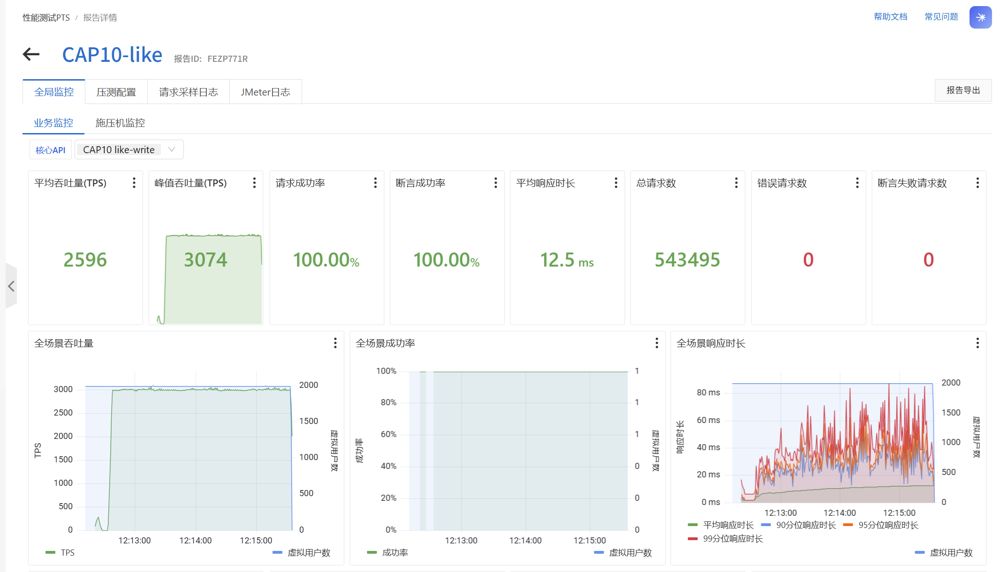
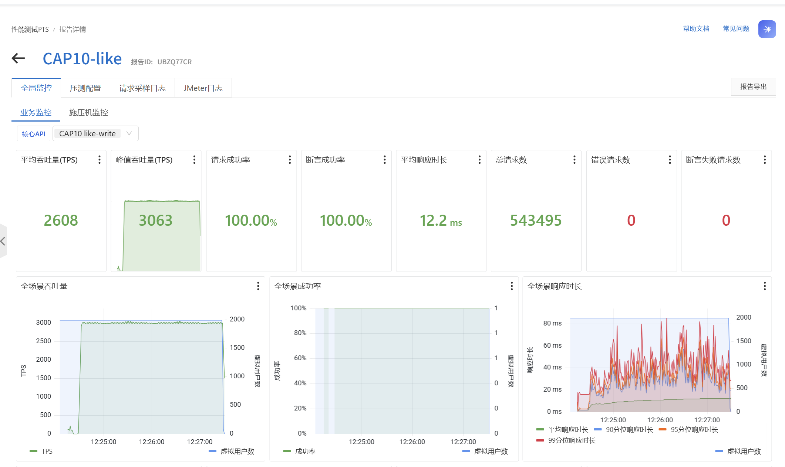
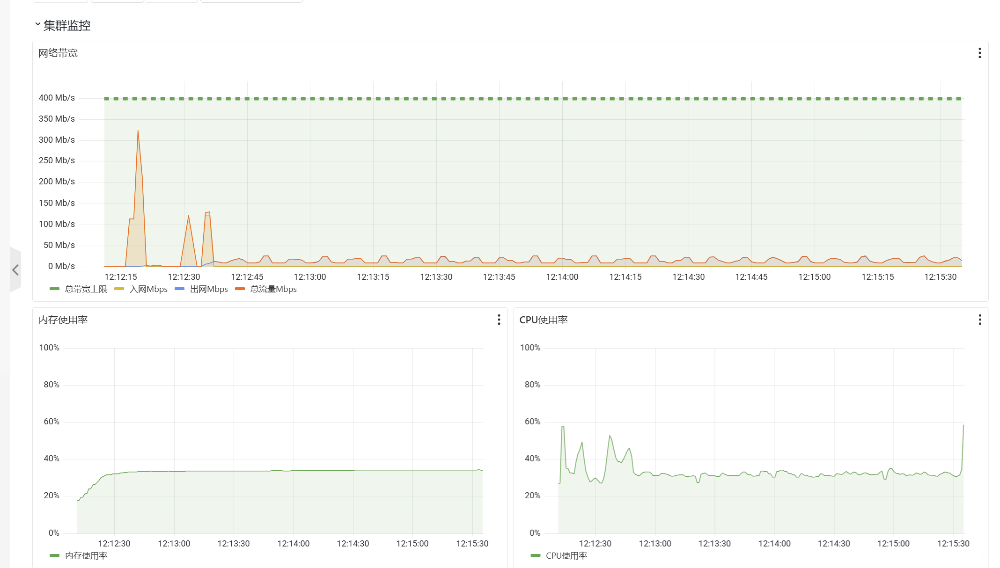
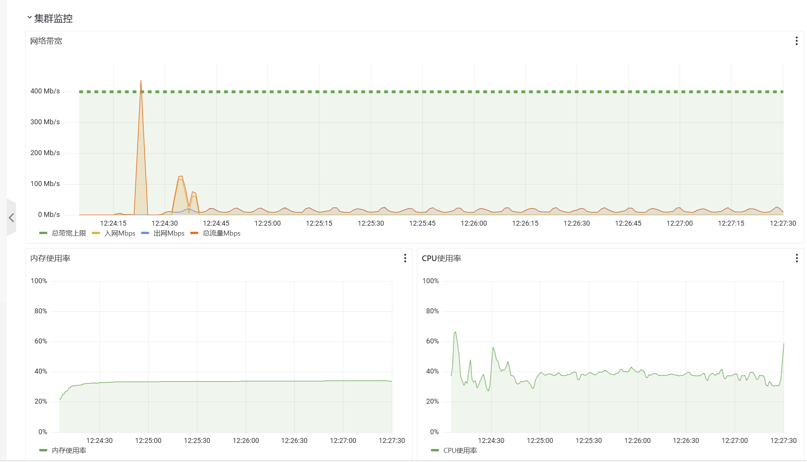

第一轮正式窗口
全部约定校验通过541,499成功状态变更 / 180 秒
3008.33成功 QPS
62 msP95
102 msP99
主窗错误、未知结果、丢弃均为 0；事实计数与数据库一致，结束后恢复耗时约 1.65 秒。
16 vCPU / 32 GiB 单机 · 独立 PTS 内网发压 · 两轮各 180 秒 · 体验点赞链路
概览均值含准备阶段；3008.33 QPS 取 180 秒正式主窗。监控来自 PTS 施压端。点击图片可放大至原尺寸。




PTS 全报告约 210 秒，汇总均值分别为 2596 / 2608 TPS，包含准备阶段。两轮各 543,495 次请求中有 1,996 次准备阶段的无变化请求；正式成绩取 541,499 次成功变更 ÷ 180 秒 = 3008.33 QPS。两轮分位数分别计算，上方延迟取较大值。
01 / 正式结果
以下统计只包含正式主窗的真实点赞 / 取消变更，预热与准备阶段的无变化请求不计入。
541,499成功状态变更 / 180 秒
3008.33成功 QPS
62 msP95
102 msP99
主窗错误、未知结果、丢弃均为 0；事实计数与数据库一致，结束后恢复耗时约 1.65 秒。
541,499成功状态变更 / 180 秒
3008.33成功 QPS
55 msP95
94 msP99
主窗错误、未知结果、丢弃均为 0；事实计数与数据库一致，结束后恢复耗时约 1.88 秒。
成功 QPS = 541499 ÷ 180 = 3008.327778。HTTP 成功对应关系变更与 Outbox 在 MySQL 中实际提交，后续消费者收据与下游收敛另行核验。两正式使用同一冻结配置，分位数按各轮主窗原始样本计算。
MySQL 容器 8 CPU / 8 GiB，buffer 4 GiB、redo 2 GiB；Kafka 容器 2 CPU / 2 GiB。数据库保留双 1 持久化、doublewrite 和原事务语义。API 连接池 128 / 128，relay 8 × 32，消费者批量 32。
通过范围包括 API、完整业务事实与派生数据、下游稳态、资源、采集与恢复。正式下游稳态按完整 180 秒中的最后 60 秒检查。此结果适用于以上私网负载模型，不代表集中争用单一热帖、最大容量、公网延迟或长时间耐久表现。
02 / 瓶颈与优化
早期云测中，1000 QPS 接口可以成功，但下游仍持续积压。优化同时覆盖写事务、Outbox 发布和消费确认。
6 → 4
合并现有关系的锁读与更新，减少数据库往返；保留版本检查、同事务 Outbox 与提交后读取。
业务 SQL 条数；BEGIN / COMMIT 仍各一次。32 → 1
将同批事件的认领 UPDATE 合并，以租约与尝试次数约束归属；有界 worker 处理事件发布。
满批 32 条认领 UPDATE；SELECT / COMMIT 另计。32 → 3
成熟批次采用点驱动完成路径，小批次保留轻量路径，更新时继续检查归属与当前状态。
满批 32 条事务内完成语句；COMMIT 仍一次。上述为已核实的组件语句变化，不直接换算为 QPS 提升比例。最终成绩还包含连接池、消费批量、数据库与 Kafka 资源配置的共同作用。
点赞事实已经提交，不代表 Outbox、消费收据和 Kafka lag 已处于稳态。早期 1000 QPS 窗口即出现“接口通过、下游失败”，因此正式验证同时检查成功变更计数、数据一致性、积压增长与停止后的恢复。
点赞计数保存在同步 MySQL 事务中。Kafka 下游各消费组按事件类型处理或记录忽略收据；不能把这条链路描述为 Redis 快速受理后再异步落点赞事实。
03 / 调优过程
分别验证完整 Feed 与真实点赞写入；本地出现时基对齐问题后，转到 ECS 与独立 PTS 发压，分离被测系统与压力来源。
1000 QPS 曾出现接口成功但下游不稳，后续 800 QPS 短窗通过。沿事务、认领、发布和消费确认逐段检查。
优化事务 SQL、批量认领与完成确认，复用连接，核对消费批量；同步修复发压准备与观测工具，保留失败原件。
验证运行时资源，候选通过后固定部署。两轮各 180 秒均达到 3000+ 成功 QPS，并通过事实、下游和恢复校验。
04 / 完整证据